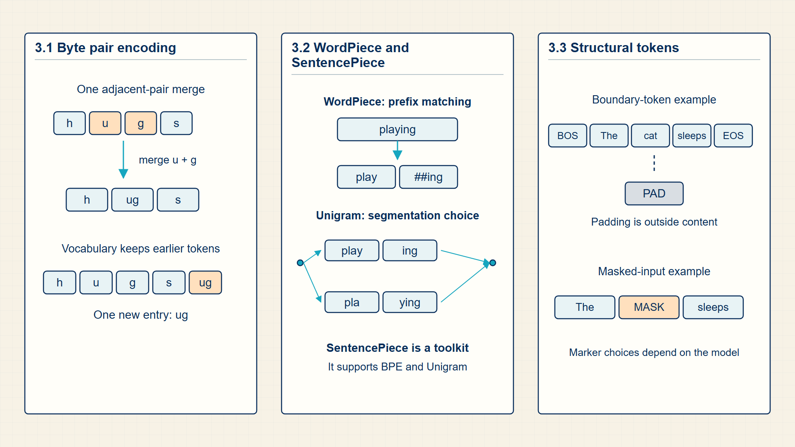
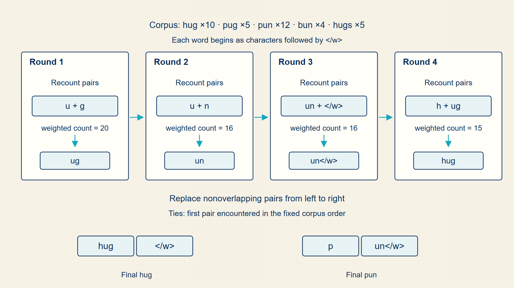
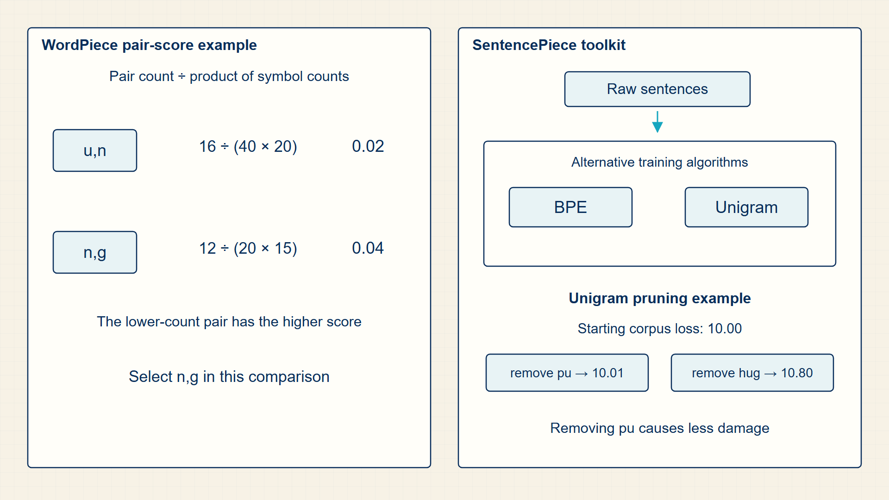

3 Subword Tokenization: Building Compact Vocabularies
A vocabulary must cover varied language without making every sequence unnecessarily long. Subword tokenization builds reusable pieces between characters and whole words.
Subword tokenizers balance vocabulary size against sequence length. Byte Pair Encoding (BPE), WordPiece, and SentencePiece reach that balance differently, while special tokens mark boundaries and model roles.
In code, Hugging Face tokenizers expose vocabulary IDs, normalization, special tokens, and padding; NLTK supplies the course n-gram preprocessing workflow.
Chapter 3 develops one required stage of the guide’s computation.

The numbered panels correspond to the chapter sections and show how each local result supplies the next operation.
3.1 Compressing Vocabularies with Byte Pair Encoding
A tokenizer defines the interface between raw text and model inputs. It decides which strings become atomic IDs and therefore what the embedding table can look up.
Token ID is an integer index into the vocabulary and embedding matrix.
Word-level tokenization is easy to understand but struggles with rare words and morphology. Character tokenization avoids unknown words but creates long sequences. Subword tokenization is the practical compromise used by many LLMs.
The tokenizer is not a preprocessing detail that can be swapped casually. A trained model’s embedding matrix, output head, and checkpoint all assume the same vocabulary and token-ID mapping.
Origin note: Byte Pair Encoding began as a compression algorithm: repeatedly replace frequent adjacent byte pairs with a new symbol. Modern subword tokenization adapts that compression idea to text vocabularies.
The machine-learning reinterpretation is that frequent pieces deserve their own symbols because they reduce sequence length without requiring a full word-level vocabulary.
The merge decision is only the first half of the BPE update. After a pair is selected, every matching adjacent occurrence in the training corpus is replaced by one new symbol, so later counts and token lengths are computed over a changed representation.
At each BPE step, choose the most frequent adjacent pair in the training corpus.
BPE merge rule:
\[ (a^\star,b^\star)=\operatorname*{arg\,max}_{a,b}\operatorname{count}(a,b) \tag{3.1}\]
where (a,b) is adjacent token pair; count(a,b) is frequency of that adjacent pair in the corpus.
BPE is greedy compression: at each step it chooses the adjacent pair whose replacement gives the largest immediate corpus-frequency payoff.
the merge rule trades a larger vocabulary for shorter token sequences.
The selected pair becomes a new subword symbol.
BPE vocabulary update:
\[ V_{k+1}=V_k\cup\{a^\star b^\star\} \tag{3.2}\]
where \(V_{k}\) is vocabulary after k merge rounds; a·b· is the new symbol formed from the selected adjacent pair; \(V_{k+1}\) is vocabulary after adding the selected merge.
The selected pair is added as one new vocabulary entry. The corpus is then retokenized so that each matching a·, b· occurrence can be represented by that one entry instead of two consecutive entries.
Each merge expands the vocabulary by one symbol while shortening the token sequence wherever the pair occurs.
Example: BPE merge rule
If ‘l o’ occurs 30 times and ‘o w’ occurs 12 times, BPE merges ‘l o’ first.
Example: BPE vocabulary update
If \(V_{k}\) has 100 symbols and the merge creates ‘low’, then \(V_{k+1}\) has 101 symbols.
- WordPiece and BPE build frequent subword units from a corpus.
- SentencePiece can tokenize text without relying on whitespace as a hard boundary.
- Padding tokens support batching but should usually be masked out of loss and attention.
- BOS and EOS tokens mark sequence boundaries for generation.
BPE trades a larger vocabulary for shorter token sequences by reusing frequent character patterns. Other subword algorithms make the same representation choice with different merge or segmentation rules.
3.2 Tokenizing Text with WordPiece and SentencePiece
BPE is not the only subword method in the course sequence. WordPiece and SentencePiece solve similar vocabulary-pressure problems with different criteria and text assumptions.
- WordPiece: A subword method that favors merges useful relative to their parts, often using continuation markers such as ##.
- SentencePiece: A language-independent tokenizer that trains directly on raw text and can treat whitespace as an ordinary symbol.
- Domain token: A token added or preserved because a course domain needs it, such as a biomedical term, code token, or Hebrew subword pattern.
WordPiece became notable in production speech/search and neural language systems because it handled rare words without exploding the vocabulary. SentencePiece is a raw-sentence tokenization framework: it can train a unigram language-model tokenizer or a BPE tokenizer without requiring pre-tokenized words. Its broader contribution is removing a hidden English-centric assumption: that spaces reliably define words.
WordPiece starts from candidate pieces and compares a pair’s joint frequency with the frequencies of its parts. A frequent pair is valuable when it occurs together more often than its individual pieces would suggest. The ## convention records that a piece continues an existing word rather than starting a new one.
The unigram form of SentencePiece begins with an overcomplete vocabulary and removes pieces whose absence increases corpus loss the least. Because spaces are represented explicitly, the algorithm can train on raw multilingual text without first declaring that whitespace always marks a word boundary.
Both methods produce the same model-facing objects: a finite vocabulary, a deterministic mapping from text to IDs, and a sequence length that controls later memory and attention cost. Their training criteria differ even though their runtime output has the same form.
WordPiece and SentencePiece make the same practical trade-off as BPE: a limited vocabulary must represent frequent whole fragments as well as rare or previously unseen text. They differ in how they score a candidate vocabulary and in whether spaces are treated as fixed boundaries.
These algorithms change the model’s numerical input before any neural computation begins. A different tokenization changes the sequence length T, the vocabulary size |V|, the embedding table rows, and the targets used for next-token prediction.
A simplified course-friendly score rewards pairs that are useful together rather than merely individually frequent.
WordPiece score:
\[ score(a,b)=\frac{\operatorname{count}(a,b)}{\operatorname{count}(a)\,\operatorname{count}(b)} \tag{3.3}\]
where a, b is candidate adjacent subword pieces; count(a,b) is number of times the pair occurs together; count(a), count(b) is individual piece frequencies.
The numerator rewards pieces that occur together. Dividing by the separate frequencies reduces the score of a pair that is common only because each part is common in many unrelated contexts.
A high-scoring pair is a candidate for one reusable subword unit, which can reduce token length without allocating a separate token to every full word.
The unigram SentencePiece method chooses a subword vocabulary that explains raw text under a probabilistic segmentation model.
SentencePiece unigram objective:
\[ V^\star=\operatorname*{arg\,min}_{V}\left[-\sum_{s\in C}\log P(s\mid V)\right] \tag{3.4}\]
where V is candidate subword vocabulary; C is training corpus; P(s | V) is probability assigned to sequence s under segmentations available from V.
For each candidate vocabulary, SentencePiece assigns probabilities to possible segmentations of every training text. Summing negative log probabilities over the corpus produces one score; the vocabulary with the smaller score explains the corpus more efficiently under this model.
This objective can learn useful pieces directly from raw text, including languages where whitespace is not a reliable word boundary.
Example: Comparing a WordPiece score with SentencePiece pruning
Suppose the pair un occurs 16 times, while u occurs 40 times and n occurs 20 times.
WordPiece score:
\(score(u,n) = \frac{16}{40 \cdot 20} = 0.02\)
A second pair occurring 12 times with part counts 20 and 15 receives score 0.04 and is preferred even though its raw count is lower.
SentencePiece pruning:
If removing token pu changes corpus loss from 10.00 to 10.01, while removing hug changes it to 10.80, pu is the safer token to prune.
Dimensions:
Tokenizer output remains one integer sequence of length T under either algorithm.
The algorithms differ during vocabulary construction; the model still receives token IDs after either choice.
Code example: WordPiece pair scores from corpus counts
from collections import Counter
piece_counts = Counter({"u": 40, "n": 20, "g": 15})
pair_counts = Counter({("u", "n"): 16, ("n", "g"): 12})
scores = {
pair: count / (piece_counts[pair[0]] * piece_counts[pair[1]])
for pair, count in pair_counts.items()
}
print(max(scores, key=scores.get), scores)The pair with the largest relative score can differ from the pair with the largest raw count.
Production WordPiece trainers include normalization and vocabulary constraints omitted here.
All three algorithms produce token IDs, but their vocabulary-building rules affect how rare words, whitespace, and multilingual text are segmented. Special tokens then mark roles that ordinary text tokens cannot express.
3.3 Delimiting Documents and Sequences with Special Tokens
A special token is a vocabulary item whose ID marks structure or control information rather than ordinary lexical content.
- BOS/EOS: Beginning-of-sequence and end-of-sequence markers.
- PAD: A padding token used to align sequences in a batch.
- MASK: A placeholder used in masked language modeling.
- Role token: A chat-format token that marks user, assistant, system, or tool content.
A model can learn behavior around special tokens because they appear in the same ID stream as ordinary tokens. Tokenizer design therefore changes the model input space.
Special tokens make sequence structure visible to the numerical model. Padding marks unused reserved positions, separators distinguish segments, and mask tokens mark positions whose original content becomes a prediction target in masked-language modeling.
Beginning- and end-of-sequence markers delimit an example. Padding creates equal-length rows for batching, while the attention mask prevents those added positions from influencing the model. Mask tokens create explicit prediction gaps for masked-language-model training.
Chat templates use role and separator tokens to identify system, user, assistant, and tool spans. These markers are ordinary integer IDs to the embedding lookup, but their repeated training context gives them a structural role.
Masked language modeling replaces selected positions with a special token or corruption pattern.
Masked input:
\[ x'_t=\begin{cases}\mathrm{MASK},&t\in M,\\x_t,&\text{otherwise}\end{cases} \tag{3.5}\]
where \(x_{t}\) is original token ID at position t; \(x'_{t}\) is corrupted input token presented to the model; M is set of positions selected for masking or corruption.
Evaluate the membership test separately at every position. A selected index t in M is replaced by the mask symbol; every other position preserves its original token ID.
The original \(x_{t}\) at selected positions remains the target, so the model must infer it from the surrounding visible context.
Example: Masked input
If \(x=[5,6,7]\) and M={2}, then the masked sequence is [5, MASK, 7].
Special tokens make boundaries, padding, and prediction roles explicit in the ID sequence. Once text is numerical, classical feature methods can count its vocabulary coordinates.
3.4 Tokenization and n-gram trace
Text is not numerical until a tokenizer and vocabulary make it numerical. The computation starts with a string, segments it into tokens, maps each token to an integer id, and pads or masks sequences so batches become rectangular tensors. Each design choice creates a different sequence length and a different failure mode for unknown or rare words.
The n-gram notebook gives a useful classical baseline because it makes probability estimation visible. Instead of learning a neural representation, the model counts contexts and continuations. The result is still a language model: it estimates the probability of the next token from previous tokens.
Subword vocabularies are built by repeated corpus-level decisions, not by hand-selecting every token.

BPE creates subword tokens by repeatedly merging frequent adjacent symbols. The result trades vocabulary size against sequence length.
BPE, WordPiece, and SentencePiece share the same practical aim but differ in how candidate subwords are selected and how raw text boundaries are treated.

WordPiece scores candidate merges by usefulness relative to their parts. SentencePiece treats tokenization as language-independent modeling over raw text, which is important for multilingual and non-whitespace corpora.
Tokenization maps raw strings to token sequences and integer IDs using a learned or fixed vocabulary. Token IDs are integer tensors [B,T]; masks are usually boolean or integer tensors with the same batch and sequence axes. Text is normalized, segmented, mapped to IDs, padded, and masked before numerical modeling begins.
In PyTorch, AutoTokenizer(...)(texts, padding=True, return_tensors='pt') produces the tensors consumed by models.
Performance note: Longer token sequences increase attention work, key-value (KV) cache size, and memory use downstream.
Example: BPE walkthrough
Starting vocabulary:
h-u-g</w>: 10, p-u-g</w>: 5, p-u-n</w>: 12, b-u-n</w>: 4, h-u-g-s</w>: 5
Round 1 — count adjacent character pairs across all words:
Pair counts: (u,g): 10 + 5 + 5 = 20; (p,u): 5 + 12 = 17; (u,n): 12 + 4 = 16; (g,s): 5.
Most frequent pair: (u,g) with count 20. Merge -> ‘ug’.
Round 2 — recount with ‘ug’ as single unit:
(h,ug): \(10+5=15\) (p,ug): 5 (u,n): \(12+4=16\) …
Most frequent: (u,n) with count 16. Merge -> ‘un’.
Round 3 — recount with ‘ug’ and ‘un’ as units:
(h,ug): 15; (ug,</w>): 15; (p,un): 12; (b,un): 4; …
Tie: (h,ug) and (ug,</w>) both have count 15. Merge (h,ug) to form hug.
After 3 rounds, the vocabulary contains: h, u, g, p, n, b, s, </w>, ug, un, and hug.
‘hug’ is now a single token. ‘pun’ tokenises as [‘p’,‘un’].
BPE learns compressive merges from frequency — no linguistic rules needed.
Key calculations
N-gram probability:
\[ P(w_t\mid\mathrm{context})=\frac{\operatorname{count}(\mathrm{context},w_t)}{\operatorname{count}(\mathrm{context})} \tag{3.6}\]
BPE merge choice:
\[ \mathrm{merge}=\operatorname*{arg\,max}_{\mathrm{pair}}\operatorname{count}(\mathrm{pair}) \tag{3.7}\]
Token id lookup:
\[ \mathrm{ids}[t]=\begin{cases}\mathrm{vocab}[\mathrm{token}_t],&\text{if }\mathrm{token}_t\text{ is represented in the vocabulary},\\mathrm{vocab}[\mathrm{UNK}],&\text{otherwise}\end{cases} \tag{3.8}\]
Dimension trace
These dimensions appear in the computation in order.
- Raw string: a sequence of characters.
- Tokens: T strings after segmentation.
- Token ids: [T], integer vocabulary indices.
- Batch ids: [B, \(T_{max}\)], padded to a common length.
- Attention mask: [B, \(T_{max}\)], marking real tokens versus padding.
PyTorch implementation notes
- Tokenizer APIs usually return \(input_{ids}\) and \(attention_{mask}\) because ids alone do not tell the model which positions are padding.
- N-gram code should expose the count table before normalizing to probabilities.
- Special tokens such as BOS, EOS, PAD, UNK, and MASK are part of the mathematical input space.
It should now be clear how to tokenize one sentence, map it to ids, pad it into a batch, and compute one n-gram probability.
Tokenization is an algorithm that defines the discrete symbols the model can store, predict, and evaluate.
Feature construction turns token IDs and counts into vectors and matrices.